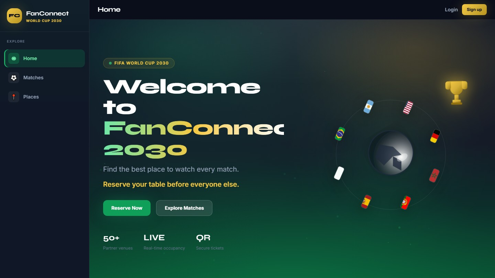
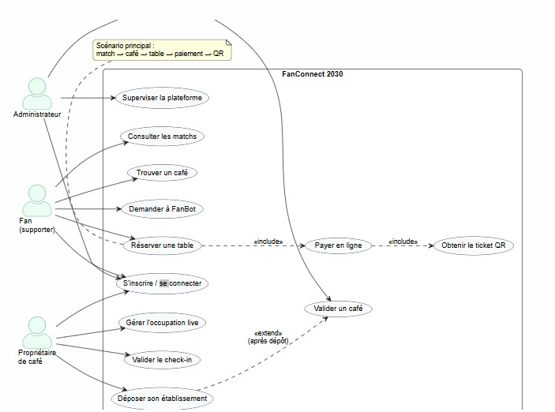
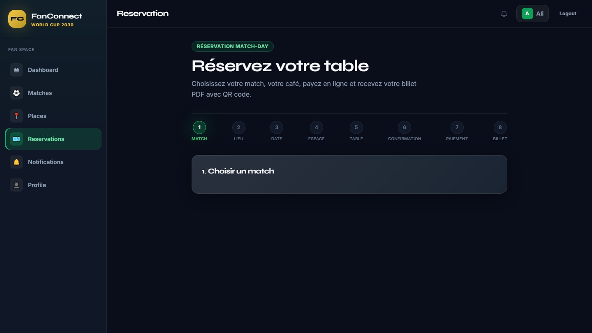
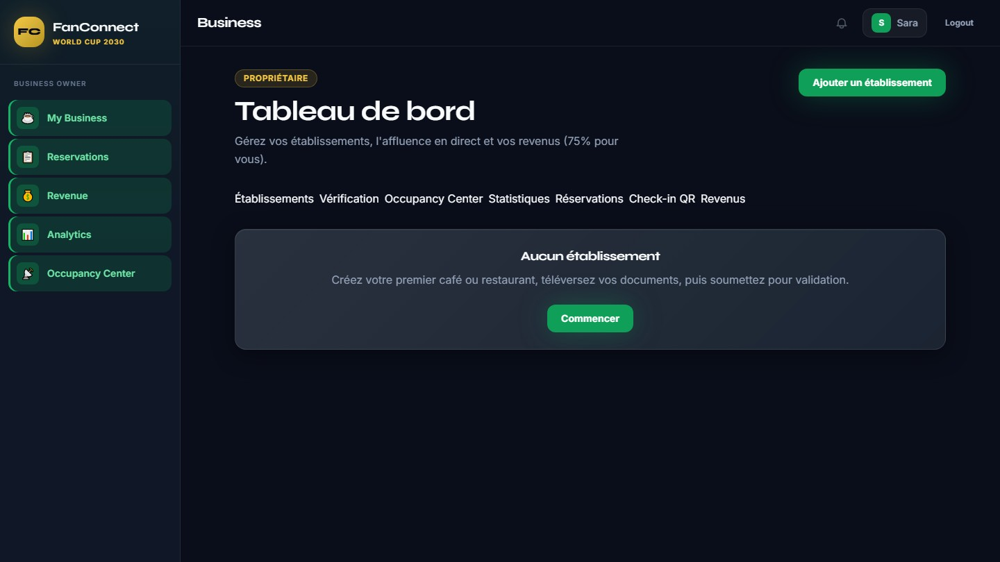
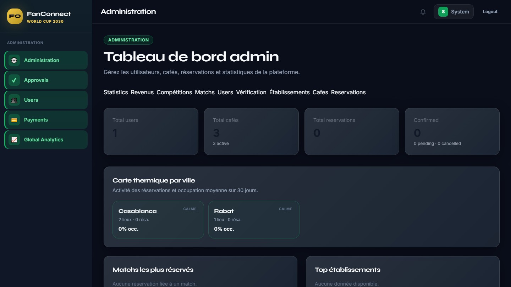

INSTITUT DE GÉNIE APPLIQUÉ · CYCLE INGÉNIEUR 5DLTI
Plateforme intelligente de réservation de cafés
pour regarder les matchs — Coupe du Monde 2030

Stage Pôle Développement · Année universitaire 2025 / 2026
ENTREPRISE D'ACCUEIL
02 / 17SSII maroco-allemande. Conception, intégration et évolution de logiciels métier (ERP, POS, café, hôtel, web / mobile).
Béni Mellal — Bd Hassan II
Casa, Rabat, Allemagne
2014 · SARL · +10 ans
GM-ERP, GM-POS, GM-CAFE, GM-HOTEL
Lien métier GM-CAFE
Conception, développement full-stack, service IA d'occupation, documentation du PFE.
SOUTENANCE PFE · FANCONNECT 2030 · GM-SOFT · IGA 2025 / 2026
CONTEXTE DU PROJET
03 / 17À l'approche de la Coupe du Monde 2030 au Maroc, les supporters cherchent un lieu proche et disponible. Les cafés n'ont pas d'outil pour gérer réservations, occupation et jour de match.
Coupe du Monde au Maroc
Fan, Owner, Admin
Match + lieu + paiement + IA
Stage GM-Soft
FanConnect 2030 prolonge GM-CAFE : digitaliser le café le jour du match.
SOUTENANCE PFE · FANCONNECT 2030 · GM-SOFT · IGA 2025 / 2026
PROBLÉMATIQUE
04 / 17Comment concevoir une plateforme fiable, sécurisée et intelligente permettant aux supporters de réserver un lieu adapté pour un match, tout en aidant les cafés à anticiper l'affluence — dans le contexte de la CDM 2030 ?
Unifier match, lieu, table et paiement dans un seul parcours.
Estimer l'affluence avant le coup d'envoi.
Séparer API métier, interface et service d'apprentissage.
SOUTENANCE PFE · FANCONNECT 2030 · GM-SOFT · IGA 2025 / 2026
OBJECTIFS
05 / 17Concevoir et réaliser une plateforme web sécurisée de réservation de cafés pour le jour de match, avec recommandation géolocalisée et prédiction d'occupation.
Match → lieu → table → paiement → QR.
Établissement, occupation, check-in.
Validation, analytics, compétitions.
Prédiction + recommandation.
Web SPA, API REST, Stripe test, IA, Docker, 3 rôles.
Mobile native, Stripe live, billetterie stade.
SOUTENANCE PFE · FANCONNECT 2030 · GM-SOFT · IGA 2025 / 2026
ANALYSE DES BESOINS
06 / 17| Solution | Ce qu'elle fait | Ce qui manque |
|---|---|---|
| TheFork / OpenTable | Réservation resto | Pas de calendrier sport |
| Billetterie stade | Tickets d'événement | Ignore les cafés de diffusion |
| WhatsApp / Facebook | Simple, déjà adopté | Pas d'occupation ni de paiement |
| Sites de cafés isolés | Identité du lieu | Pas de vision multi-établissements |
Aucune offre n'unit calendrier football, géolocalisation, réservation, paiement et occupation prédictive.
SOUTENANCE PFE · FANCONNECT 2030 · GM-SOFT · IGA 2025 / 2026
FONCTIONNALITÉS
07 / 17| ID | Fonctionnalité | Acteur |
|---|---|---|
| EF01 | Inscription et authentification JWT | Tous |
| EF02 | Match Center Coupe du Monde | Fan |
| EF03 | Recherche et filtrage des établissements | Fan |
| EF04 | Wizard de réservation multi-étapes | Fan |
| EF05 | Paiement en ligne Stripe | Fan |
| EF06 | Recommandations (proximité + affluence) | Fan |
| EF07 | Prédiction d'occupation (IA) | Fan / Owner |
| EF08 | Gestion business, occupation, check-in QR | Owner |
| EF09 | Modération, analytics, compétitions | Admin |
Sécurité
JWT, rôles, secrets .env
Performance
API métier < 2 s
Maintenabilité
Couches, Flyway, OpenAPI
Portabilité
Docker Compose
Paiement
PCI-DSS via Stripe
SOUTENANCE PFE · FANCONNECT 2030 · GM-SOFT · IGA 2025 / 2026
CONCEPTION UML
08 / 17
SOUTENANCE PFE · FANCONNECT 2030 · GM-SOFT · IGA 2025 / 2026
ARCHITECTURE
09 / 17React 18 · Vite · Tailwind — SPA Fan / Owner / Admin
Spring Boot 3 · Java 21 — REST, JWT, JPA, OpenAPI
PostgreSQL 16 · Flyway — users, matchs, bookings
Random Forest · /predict · /train
Stripe · Docker · Nginx
SOUTENANCE PFE · FANCONNECT 2030 · GM-SOFT · IGA 2025 / 2026
TECHNOLOGIES UTILISÉES
10 / 17SOUTENANCE PFE · FANCONNECT 2030 · GM-SOFT · IGA 2025 / 2026
RÉALISATION
11 / 17


SOUTENANCE PFE · FANCONNECT 2030 · GM-SOFT · IGA 2025 / 2026
INTELLIGENCE ARTIFICIELLE
12 / 17Random Forest. Features : occupation, historique, horizon kickoff, fraîcheur du report owner.
Prédictions 1 h / 2 h / coup d'envoi. Risque LOW / MEDIUM / HIGH.
Rayon 5 → 10 → 20 km. Score distance × occupation.
Intentions match / café / réservation. Fallback déterministe.
SOUTENANCE PFE · FANCONNECT 2030 · GM-SOFT · IGA 2025 / 2026
DÉMONSTRATION
RÉSULTATS
14 / 17Full-stack 3 rôles
Stripe test + ticket QR
IA d'occupation + recos
Docker, Swagger, rapport
Architecture n-tiers
Sécurité JWT / Stripe
ML dans un produit métier
Lien métier GM-CAFE
Tests occupation / geo / paiement
Parcours Fan / Owner / Admin
Routes protégées par rôle
Health checks API + IA
SOUTENANCE PFE · FANCONNECT 2030 · GM-SOFT · IGA 2025 / 2026
LIMITES ET PERSPECTIVES
15 / 17Pas de saison CDM réelle — MAE à recalibrer.
Stripe test, pas de webhooks live.
SPA responsive, pas d'app native.
1. FanBot conversationnel enrichi
2. Application mobile native
3. Données réelles + suivi MAE
4. Alertes matchs / occupation
SOUTENANCE PFE · FANCONNECT 2030 · GM-SOFT · IGA 2025 / 2026
CONCLUSION
16 / 17Oui : une plateforme n-tiers, sécurisée par JWT et Stripe, permet au fan de réserver un café pour un match, et au propriétaire d'anticiper l'affluence grâce à un moteur d'occupation et un Random Forest.
GM-CAFE × CDM 2030, périmètre tenu.
UML, 3-tiers, IA découplée.
Trois rôles, jusqu'au QR.
Tests, Docker, honnêteté IA.
SOUTENANCE PFE · FANCONNECT 2030 · GM-SOFT · IGA 2025 / 2026
Questions du jury.
FanConnect 2030 · Soutenance PFE 5DLTI
Présenté par Kassimi
Encadrant académique : M. Bouchib Riyami
Organisme : GM-Soft · Béni Mellal · 2025 / 2026